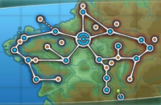

A região de Kalos é o cenário central dos jogos Pokémon X e Y, inspirada na França. Kalos combina cidades elegantes, estradas bem planejadas, florestas, montanhas e áreas costeiras, oferecendo um mundo estético e vibrante. O jogador inicia em Vaniville Town, recebendo seu primeiro Pokémon do Professor Sycamore — Chespin, Fennekin ou Froakie — que define a estratégia inicial para enfrentar os ginásios. Vaniville Town é pequena e acolhedora, funcionando como introdução à mecânica de captura, batalhas e evolução. Kalos possui cidades e ginásios notáveis, como Santalune City, com líder Viola, especialista em Pokémon do tipo Inseto; Lumiose City, a grande metrópole da região; e Coumarine City, com desafios estratégicos e a presença de Pokémon aquáticos. Cada cidade combina estética, exploração e batalhas.
